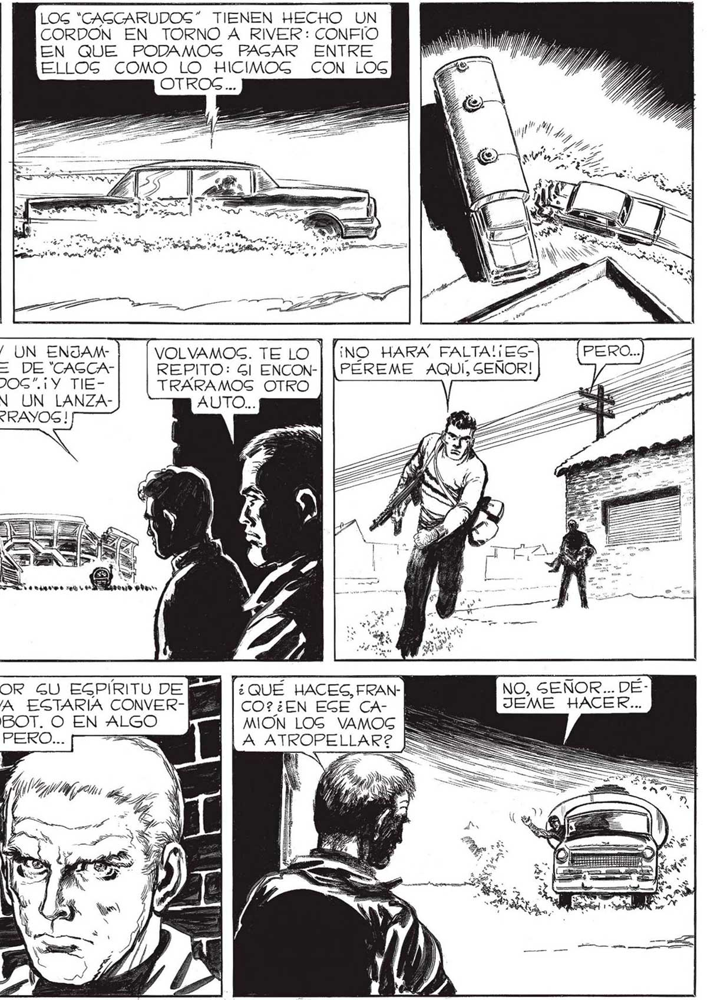

168 NO SABRAN PY YA NOG DEGCUBRI- | POR DON- RAN... ¡ANDA HACIA DE VAMOS. EL EGTADIO, LO MAG RAPIDO POGIBLE ! JUGTO CUANDO EGTABAMOG A A | MENOG DE DOG CUADRAS DEL|2 ESTADIO... Gl ENCONTRARAMOS [4 OTRO AUTO... p ze GE FUE... NO TIENE | DEMAGIADO ARRAIGADO EL SENTIDO DE LA DISCIPLINA, QUE DIGAMOS.. PERO QUIZA GEA MEJOR AGÍs. CRUZAMOS VELOZMENTE LAG VÍ'AS DEL FERROCARRIL, UNOG GEGUNDOG MAG Y YA EGTABAMOG EN LA VECINDAD DEL ESTADIO. PERO LA GUER: TE NOS ABANDONO... LOG "CAGCARUDOG” TIENEN HECHO UN CORDON EN TORNO A RIVER: CONFIO EN QUE PODAMOG PAGAR ENTRE ELLOG COMO LO HICIMOG CON LOG OTROS... ONA — XX y Ne "HAY UN ENJAMBRE DE “CAGCARUDOG”.¡Y TIEVOLVAMOG. TE LO | TRARAMOS OTRO NEN UN LANZA- AUTO... RRAYOG ! da AO O e de, euio > be INICIATIVA YO YA ESTARIA CONVERTIDO EN UN ROBOT. O EN ALGO Pear. . PERO... == QUÉ HACES, FRANCO? ¿EN EGE CANO HARÁ FALTA! ¡EGREPITO: Gl ENCON-| [PÉREME AQUÍ, SEÑOR! NO, SEÑOR... DÉJEME HACER...
